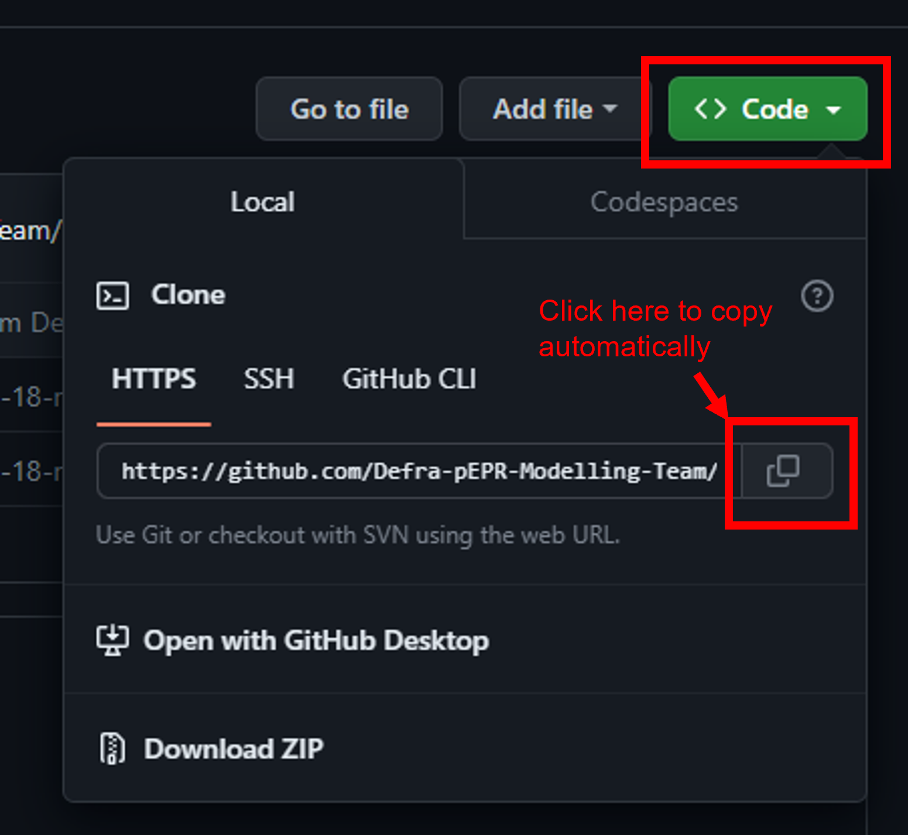

In order to work with code that is stored on Github in R Studio we need to ‘clone’ the relevant repository. ‘Cloning’ a repository means creating a copy on your local machine that so you can run and edit the code in it!
To clone a repository, follow these steps:
First we need to generate a ‘personal access token’.
Next obtain the address of the repository you want to clone. This can be found on the repository page on github by clicking the green “<> Code” button (it is usually the URL of the repo with “.git” at the end).

Next, in R Studio go to ‘File > New Project > Version Control > Git’ and paste in the address from the previous step. Then click ‘Create project’.
If prompted enter your Github username but instead of our password we need to use the token we generated in step 1 of ‘How to clone a repository’.
You have now successfully cloned a repo into your R Studio. You should now be able to access the git tab in the top right window.
To make changes to the code follow the steps on the “How to edit Github code” page.